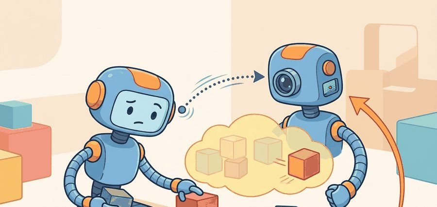
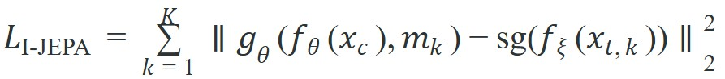
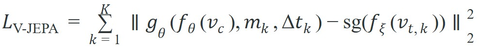
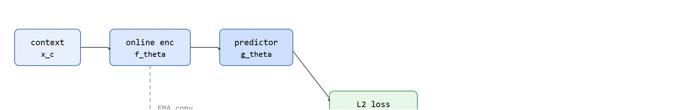

"A still image can tell you what exists; a video can tell you what is about to matter."
A Temporal Representation Learner

This section assumes familiarity with the JEPA (Joint-Embedding Predictive Architecture) latent-prediction loss introduced in section 40.1. The design decisions covered here (masking strategy, target encoder, temporal index) are extended in section 40.3, where V-JEPA gains an action-conditioning mechanism that connects representation learning directly to planning. The broader transfer-evaluation pattern introduced here recurs in Part V alongside diffusion-policy pretraining in section 22.3.
A robot arm hovering above a rolling ball must predict where that ball will be 200 ms from now, not what it looks like right now. I-JEPA and V-JEPA represent the critical fork in self-supervised representation learning: one masters spatial semantics from a single frame, the other forces a model to internalize motion, occlusion, and temporal causality without ever predicting pixels. That gap matters enormously for embodied AI, where the cost of a wrong action plan is physical. Here you will dissect both objectives, compare their masking strategies and target encoders, and build intuition for which representational invariances each one buys you.
Figure 40.2A frames the split at the heart of this section: the same masking idea applied to a still image versus a video clip, with the video side carrying motion cues the image side cannot express. Freeze a video of a ball rolling toward a robot gripper on any single frame and the whole point disappears: the ball could be arriving, leaving, or sitting still, and the arm has no way to know which. That is the gap between I-JEPA, which reasons about a single still frame, and V-JEPA, which extends the same latent-prediction idea across time to capture motion. I-JEPA is already a strong test of semantic prediction because the model cannot succeed by copying pixels. But a robot does not act in static images. It acts in a world where occlusion clears, objects move, and contact depends on temporal continuity. A representation that is excellent at image semantics can still fail to preserve the motion cues needed for action timing or object tracking.
V-JEPA extends the JEPA objective from images to video. The context is now a spatiotemporal block of frames, and the target is a masked future or withheld region in a video clip. The central question is no longer "what is behind the mask?" but "what latent future is consistent with the observed motion and scene dynamics?" To see how small that change looks on paper and how large it looks in what the model must learn, it helps to write the two objectives side by side.
The image formulation can be written as context-to-target latent regression over 2D patches. V-JEPA keeps the same latent-loss structure but swaps the input domain to video clips:


The extra temporal index $\Delta t_k$ matters. In video, the model must preserve object identity and temporal evolution: velocity, contact onset, object permanence under occlusion, and the difference between a transient appearance change and a real state change.
Why the target encoder matters for physical robots. The stop-gradient operator $\operatorname{sg}$ applied to $f_\xi$ denotes a separate target encoder whose weights are updated as an exponential moving average of the online encoder, not by gradient descent. For an embodied agent, this prevents representational collapse: if both the context encoder and the target encoder collapse to the same constant embedding, the loss reaches zero without the model learning anything useful. Collapse is especially dangerous on robot hardware, where a collapsed representation produces confidently wrong predictions about contact and timing, leading to failed grasps or collisions that are costly to recover from.
How it works mechanistically. The target encoder $f_\xi$ accumulates a slow exponential moving average: $\xi \leftarrow \tau \xi + (1-\tau)\theta$, with $\tau$ close to 1 (typically 0.996 to 0.999). The target embeddings therefore change slowly enough to serve as stable regression targets across many gradient steps. They still track the improving online encoder over time. Because the target encoder receives no gradient, backpropagation updates only the context encoder and predictor. That constraint forces the predictor to bridge the gap between partial context and the stable target rather than exploiting shortcut correlations. Figure 40.2B below traces this loop end to end.
So far: JEPA regresses a predicted latent against a stop-gradient target produced by a separate encoder, and that target encoder is kept stable (not trained by gradient descent) by updating it as a slow exponential moving average of the online encoder, which together is what keeps the training loop from collapsing to a trivial constant embedding.

V-JEPA is not "I-JEPA plus more frames." It changes the latent invariances that matter. A good video representation must remain stable under appearance noise while still being sensitive to dynamic events that change the action plan.
Think of the target encoder as a compass needle submerged in thick oil. When you turn the housing (the online encoder updates rapidly with each gradient step), the needle inside does not snap to the new direction instantly; it drifts there slowly and smoothly because the oil resists sudden motion. That lag is exactly the point: a student trying to hit a target that moves in lockstep with their own answers can always cheat by making both answers meaningless together. Give the target its own sluggish inertia and the student is forced to produce something genuinely informative to close the gap.
Code Fragment 40.2.1 shows the bookkeeping difference between the image and video settings. The tensor shapes are simple, but they make the temporal burden visible.
# Compare the bookkeeping load in image JEPA and video JEPA.
# The video case adds time, which changes what a target mask means
# and what information the predictor must preserve.
image_tokens = (14, 14, 768)
video_tokens = (16, 14, 14, 768)
ijepa_context = (10, 10, 768)
ijepa_target = (4, 4, 768)
vjepa_context = (8, 10, 10, 768)
vjepa_target = (4, 4, 4, 768)
print({
"image_tokens": image_tokens,
"video_tokens": video_tokens,
"ijepa_target_volume": 4 * 4,
"vjepa_target_volume": 4 * 4 * 4,
}){'image_tokens': (14, 14, 768), 'video_tokens': (16, 14, 14, 768), 'ijepa_target_volume': 16, 'vjepa_target_volume': 64}Trace the latent-prediction loss with tiny numbers. Take a single masked tube and a 3-dimensional embedding (real V-JEPA uses 768 dims; we shrink it to see the arithmetic). Suppose the online encoder plus predictor output the latent guess $\hat{z} = (0.40, 0.10, -0.20)$, while the EMA target encoder produces $z = (0.50, 0.00, -0.30)$. The per-tube loss is the squared L2 distance: $(0.40-0.50)^2 + (0.10-0.00)^2 + (-0.20-(-0.30))^2 = 0.01 + 0.01 + 0.01 = 0.03$. Only $\hat{z}$ carries gradient; $z$ is frozen by stop-gradient. Now apply the EMA update to the target encoder with $\tau = 0.996$: a target weight at $\xi = 0.500$ tracking an online weight at $\theta = 0.600$ moves to $\xi \leftarrow 0.996 \times 0.500 + 0.004 \times 0.600 = 0.4980 + 0.0024 = 0.5004$. The target barely budges (by 0.0004), which is exactly why it stays a stable regression target across the next several hundred gradient steps while still inching toward the improving online encoder.
The expected output should show that the video target volume is larger. That is the first hint that V-JEPA must solve a harder abstraction problem: more latent content, more possible futures, and stronger pressure to learn motion-aware features. Put it concretely: an I-JEPA target mask covers 16 patch tokens; the equivalent V-JEPA tube mask covers 64 tokens spanning time, space, and motion. The model must predict four times as much latent content, and that content now includes the causal structure of motion itself, not just the appearance of a hidden region.
When adapting an I-JEPA codebase to video, replace random 2D patch masking with spatiotemporal tube masks: each tube spans all frames at a fixed spatial location, which forces the predictor to reason across time rather than interpolate between visible neighboring frames. The V-JEPA authors use tubes of shape (T, h, w) where h and w are small patch blocks, and they mask roughly 90% of the video tokens in the target while keeping a short, spatially contiguous context block. Keeping 2D random masking produces representations that score well on static probes but degrade sharply on action-anticipation benchmarks because the model learns spatial inpainting rather than temporal prediction.
This probe takes 10 lines. A maintained PyTorch implementation does the same shape handling in a few tensor operations while also managing batching and mixed precision. The point of writing the tiny version first is to make it obvious that "video JEPA" means a different target geometry, not just a larger dataset.
| Setting | I-JEPA strength | V-JEPA strength |
|---|---|---|
| Static object ranking | Strong semantics with cheaper training | Often unnecessary unless motion context matters |
| Action anticipation | Weak, temporal cues are missing | Captures evolving intent and scene dynamics |
| Occlusion-heavy manipulation | Can encode object identity but misses temporal persistence | Better for tracking hidden objects through time |
| Robot video pretraining before planning | Useful initializer | Better aligned with downstream rollout prediction |
This is the main didactic lesson of the section: I-JEPA and V-JEPA are not competitors so much as different levels of abstraction. Use I-JEPA when you need robust spatial semantics and the downstream task is mostly snapshot-based. Use V-JEPA when the downstream policy depends on motion history or on predicting what remains true across a short temporal window. Deciding which abstraction level a task needs, however, is only trustworthy once you can measure the difference, which means designing transfer probes that actually expose temporal structure.
A mobile manipulator that must grab a moving bin from a conveyor can use I-JEPA features to recognize the bin category, but that does not tell the arm where the handle will be 400 milliseconds later. V-JEPA-style features can encode the drift direction and the persistence of the handle under partial occlusion, which is exactly the signal a short-horizon controller needs.
Meta's V-JEPA 2-AC fits a V-JEPA 2 encoder with an action-conditioned predictor and deploys it zero-shot on Franka arms for pick-and-place, using latent rollouts for planning rather than any task-specific reward or demonstrations on the target robot. The same frozen latent prediction that scores well on Something-Something v2, a benchmark video dataset of short human hand-object interaction clips labeled by the fine-grained action performed, drives the model-predictive control loop, illustrating that one self-supervised video representation can transfer from internet-scale clips to real manipulation hardware.
Linear probing, training a single linear layer on top of a frozen encoder's output to test how usable its representations are for a task, accuracy alone is not a sufficient transfer test. For I-JEPA, choose tasks where a single frame carries the answer: object-category recognition on Open X-Embodiment still frames, grasp-point localization on Franka Panda wrist-camera images, or end-effector pose retrieval on BridgeData V2 snapshots. For V-JEPA, the probe must demand temporal content. Use action-anticipation on RT-X conveyor sequences (gripper state 400 ms out), state-change detection on contact-event clips from the LeRobot SO-100 dataset, or short-horizon rollout prediction on Boston Dynamics Spot logs where footing changes mid-stride.
If the video representation does not beat the image baseline on at least one motion-sensitive probe, you are paying the video-training cost for nothing. Bardes et al. (2024) report that on the benchmarks they evaluate, the I-JEPA to V-JEPA jump on action-anticipation probes typically exceeds 8 percentage points in top-5 recall, though the exact margin depends on the probe task and dataset. The cost gap can be stark in practice: I-JEPA plus a learned temporal head may need on the order of 40,000 labeled robot video clips to match what a well-masked V-JEPA checkpoint reaches from around 2,000, because V-JEPA bakes temporal structure into the representation rather than squeezing it into the head; treat these figures as illustrative orders of magnitude rather than fixed constants, since they will shift with encoder size and task. Smaller gains on your own dataset typically signal a masking-policy problem rather than a data-volume one, so it is worth checking the masking before buying more pretraining compute.
1. Freeze the encoder checkpoint pretrained on robot video (Open X-Embodiment or LeRobot).
2. Run one static-semantic probe (grasp-point localization on held-out BridgeData V2 frames) and one temporal probe (400 ms action anticipation on RT-X conveyor sequences) on the same validation split, using a shared two-layer MLP head.
3. Compare I-JEPA and V-JEPA under identical head architecture and learning rate (1e-4, 50 epochs).
4. Promote V-JEPA only if the temporal probe improves by at least 5 percentage points in top-5 recall, enough to justify the roughly 3x pretraining compute cost versus I-JEPA at ViT-L scale (ViT: Vision Transformer).
Code Fragment 2 below records the minimum contract for an I-JEPA versus V-JEPA transfer comparison.
# Record a matched transfer experiment for image and video JEPA.
# The same downstream head and split keep the comparison fair,
# so any gain can be attributed to temporal representation quality.
from dataclasses import asdict, dataclass
@dataclass
class TransferAudit:
image_encoder: str
video_encoder: str
probe_task: str
split: str
metric: str
accepted_winner: str
def as_row(self) -> dict[str, object]:
return asdict(self)
audit = TransferAudit(
image_encoder="ijepa_vith",
video_encoder="vjepa_vitl",
probe_task="short_horizon_action_anticipation",
split="held_out_conveyor_sequences",
metric="top5_future_action_recall",
accepted_winner="pending",
)
print(audit.as_row()){'image_encoder': 'ijepa_vith', 'video_encoder': 'vjepa_vitl', 'probe_task': 'short_horizon_action_anticipation', 'split': 'held_out_conveyor_sequences', 'metric': 'top5_future_action_recall', 'accepted_winner': 'pending'}TransferAudit dataclass records the paired I-JEPA/V-JEPA encoder names, the shared probe task, the held-out split, and a still-pending winner field, keeping the comparison construct-matched. The crucial fields are the shared probe task and held-out split, because otherwise the "video helps" claim can collapse into a comparison between different heads or different data slices.The expected output is a record with `accepted_winner` still marked `pending`. That is healthy. You should not pre-declare V-JEPA as the winner until it proves that temporal pretraining improves the exact motion-sensitive behavior you care about.
A common misconception treats V-JEPA as a pixel-level video prediction model that forecasts what future frames will look like. This is wrong: V-JEPA predicts in latent representation space, exactly as I-JEPA does, and never reconstructs or generates any pixels. In an embodied AI setting this distinction is critical. Pixel prediction wastes model capacity on irrelevant texture details (lighting changes, background motion, compression artifacts) that have no effect on action planning. Latent prediction instead forces the model to encode only the semantically and dynamically meaningful content. The correct mental model is a regression target that lives entirely inside the encoder's embedding space: the predictor must produce a latent vector that matches the target encoder's embedding of the withheld video tube, not an image anyone could display.
A common mistake is to assume that more temporal data automatically yields a better control representation. In practice, a weak masking policy or a downstream task with little temporal content can make V-JEPA look unnecessarily expensive while adding little over I-JEPA. Consider a concrete case: a team pretrains V-JEPA on 16-frame clips of a warehouse robot but evaluates transfer solely on object-category recognition (a static-semantic task). The video model scores within noise of the I-JEPA baseline because neither temporal ordering nor motion persistence is tested. The failure is not in the model: it is in the evaluation contract. The temporal burden of video pretraining only pays off when the probe task actually requires the model to resolve what changed between frames, not merely what is present in them. If your best temporal probe (for example, short-horizon action anticipation or state-change detection) does not show a statistically meaningful gain over I-JEPA under a matched head and the same validation split, the video pretraining cost is likely unjustified for that deployment.
Action-conditioned latent world models (2025). V-JEPA 2 (Meta AI, Assran et al., 2025; arXiv 2506.09985) adds an action-conditioning mechanism so the predictor can distinguish what the scene would look like under different robot actions. The open direction is scaling this to long-horizon, multi-step rollouts where compounding prediction error currently limits planning depth to a few seconds of robot time.
JEPA as a backbone for model-predictive control (2024-2026). Several groups, including work from NYU and CMU on latent-space MPC (Model-Predictive Control), are replacing explicit dynamics models with frozen V-JEPA encoders and a learned transition head that propagates latent states forward under candidate action sequences. The key challenge is that the JEPA latent space was not trained to be metrically consistent across rollout steps, so small prediction errors can drift to regions the encoder never saw during pretraining.
Multimodal JEPA: extending to touch and proprioception (2024-2025). Research at Berkeley and in the Robotics Foundation Model line (e.g., Hejna et al., 2024, on cross-modal predictive coding) is exploring whether the JEPA objective generalizes to joint-angle streams and tactile sensor signals, producing a single latent space that ties vision and touch together without pixel reconstruction of either modality.
Open problem for a PhD student. V-JEPA and its successors are evaluated on held-out video clips, but an embodied agent intervenes in the world and changes it. There is currently no principled protocol for measuring whether a JEPA-trained latent space is intervention-consistent: that is, whether the predicted latent for "push object left" diverges from the predicted latent for "push object right" by an amount that correlates with the actual outcome difference in closed-loop rollouts. Designing that evaluation and identifying which pretraining modifications (masking policy, action conditioning schedule, or target-encoder lag) most improve intervention-consistency is an open and tractable thesis problem.
Return to Section 40.1 for the core JEPA loss. Jump forward to Section 40.3 for the action-conditioned extension in V-JEPA 2. For motion-sensitive control policies, compare this representational route with the direct action-generation route in Chapter 22.
Can you name one downstream task where I-JEPA is probably sufficient and one where V-JEPA should win? Can you justify the answer in terms of temporal information rather than model size alone?
I-JEPA is often the cheaper semantic initializer. V-JEPA is the better candidate when the downstream task depends on motion continuity, anticipatory state estimation, or latent prediction under occlusion. A strong engineering pattern is to start with the image baseline, then justify the move to video with one matched temporal benchmark and one closed-loop rollout task. A representation that captures what a scene looks like but not what it is about to do is a photograph, not a world model.
I-JEPA is a strong snapshot memory. V-JEPA starts acting like a short movie memory with consequences.
Beginner (weekend): I-JEPA grasp-point probe in Gymnasium. Fine-tune a frozen I-JEPA ViT-S checkpoint on top-down wrist-camera frames from a Gymnasium FetchPickAndPlace rollout, training a two-layer MLP to predict the pixel coordinates of the target object centroid. The key challenge is constructing a balanced set of frozen-encoder embeddings that covers enough object positions without live robot access, so you will need to run rollouts with a scripted policy to collect the still frames first.
Intermediate (1-2 weeks): V-JEPA temporal probe on a LeRobot SO-100 dataset. Pretrain or fine-tune a V-JEPA encoder on 16-frame clips from the LeRobot SO-100 arm dataset, then attach a linear probe that predicts the gripper state (open or closed) 400 ms ahead and compare top-5 recall against a matched I-JEPA baseline under the same MLP head. The key challenge is constructing spatiotemporal tube masks correctly so the model cannot shortcut by reading gripper state from the visible context frames rather than learning temporal dynamics.
Goal (15-30 min): see why the stop-gradient EMA target encoder is what stops a JEPA model from collapsing to a constant embedding. Tools: PyTorch, a small ViT or even a 3-layer CNN as the encoder, and any small image folder (CIFAR-10 via torchvision.datasets is enough; no robot needed). Build: implement the minimal I-JEPA loop from the diagram in this section, one online encoder plus a one-layer predictor, plus a target encoder, with the L2 latent loss. What to vary: run two configurations. Config A: the target encoder is a true EMA copy with tau = 0.996 and stop-gradient. Config B: delete the stop-gradient and let the target encoder share weights and receive gradient. What to observe: log the variance of the batch embeddings each step. In Config B the embedding variance crashes toward zero within a few hundred steps (the representation collapses, loss goes to zero learning nothing); in Config A the variance stays bounded and the loss decreases meaningfully. Then sweep tau in Config A over {0.9, 0.99, 0.999}: too-fast a target (small tau) starts to mimic the collapse, too-slow (tau near 1) stalls learning. This makes the slow-compass intuition from the key-insight callout concrete and measurable.
I-JEPA and V-JEPA share the same latent-prediction philosophy, but V-JEPA earns its cost only when temporal information changes the downstream decision. The correct comparison is not image versus video in the abstract, it is static semantics versus motion-aware control value.
Design a matched probe suite that would fairly compare I-JEPA and V-JEPA for a bin-picking robot. Include one static task, one temporal task, the shared downstream head, and the acceptance rule for promoting the video representation.
Meta AI. "Introducing the V-JEPA 2 World Model and New Benchmarks." (2025). https://ai.meta.com/blog/v-jepa-2-world-model-benchmarks/
The official V-JEPA 2 release discusses video-trained world models, benchmarks, and zero-shot robot-control claims. The chapter treats these as important frontier claims that need task-level verification.
Assran, M. et al.. "V-JEPA 2: Self-Supervised Video Models Enable Understanding, Prediction and Planning." (2025). https://arxiv.org/abs/2506.09985
The V-JEPA 2 paper connects self-supervised video pretraining with action-conditioned latent planning. It is the central technical reference for this chapter's JEPA-to-control bridge.
Bardes, A. et al.. "V-JEPA: Revisiting Feature Prediction for Learning Visual Representations from Video." (2024). https://arxiv.org/abs/2404.08471
V-JEPA extends JEPA-style prediction to video. It grounds the chapter's distinction between predicting latent features and reconstructing pixel-level futures.
Assran, M. et al.. "Self-Supervised Learning from Images with a Joint-Embedding Predictive Architecture." (2023). https://arxiv.org/abs/2301.08243
I-JEPA is the image-based foundation for the joint-embedding predictive idea. It is useful for understanding masking, target encoders, and representation prediction before moving to video.
LeCun, Y.. "A Path Towards Autonomous Machine Intelligence." (2022). https://openreview.net/forum?id=BZ5a1r-kVsf
This position paper frames JEPA as a path toward predictive abstract representations. It gives the conceptual motivation for predicting in representation space rather than reconstructing every sensory detail.